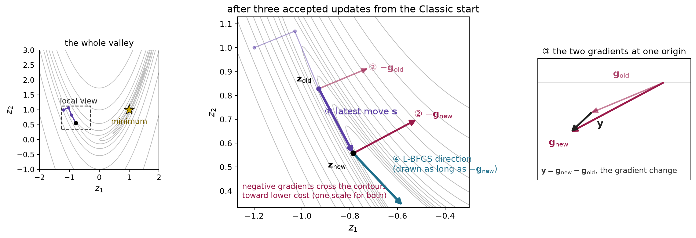
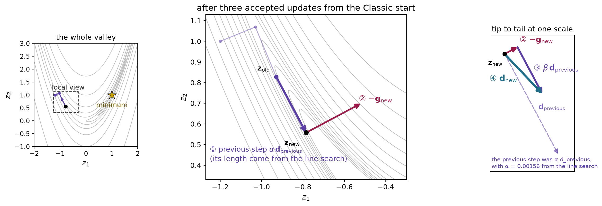
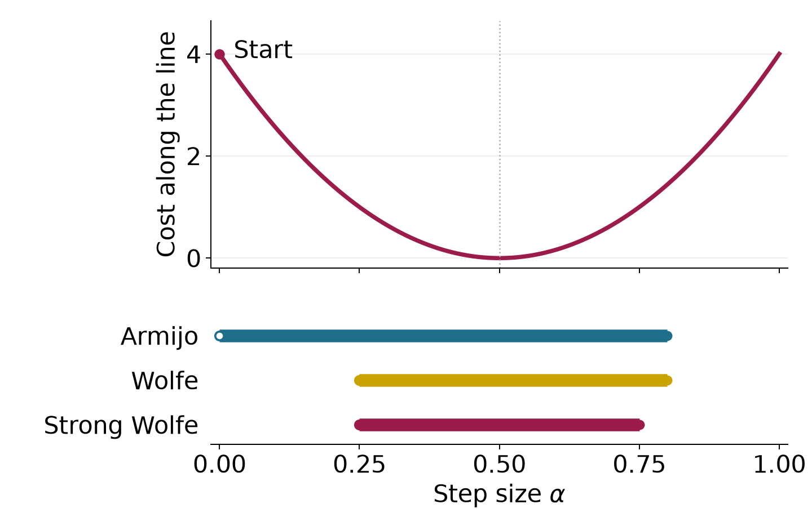

Chapter 1 established how joint angles determine a tool’s position and how the Jacobian predicts its small displacement. We assume that you can evaluate these maps and solve a small linear system. Here we use them to choose a configuration that reaches a target while respecting joint limits and geometric requirements. You will learn to construct a cost, propose and check numerical updates, and distinguish a successful solution from a calculation that merely stops. One planar arm connects all three parts, from an unconstrained position task to constrained inverse kinematics.
Consider the planar arm with link lengths 0.4 m and 0.3 m. Its shoulder and elbow angles form the joint vector \mathbf q. The elbow angle is relative to the first link. Forward kinematics (FK), written \varphi, maps these angles to the tip’s world position. We start at 30 and 45 degrees and ask the tip to reach the world point 0.5 m right and 0.2 m above the base. Angles inside derivatives and numerical calculations are in radians.
Subtract the target \mathbf y^* from the current position to form the vector of task errors, called the residual. Its half squared length gives one number for comparing configurations, called the cost.
\mathbf r(\mathbf q)=\varphi(\mathbf q)-\mathbf y^*, \qquad f(\mathbf q)=\tfrac12\mathbf r(\mathbf q)^\top\mathbf r(\mathbf q). \tag{1.1}
Residual components have units of meters, so this cost has units of squared meters. Minimizing it is the position inverse-kinematics (IK) problem. A zero cost means the modeled tip reaches the target.
The Jacobian \mathbf J predicts the change in tip position produced by a small joint increment \boldsymbol\delta. At the current guess, the local prediction would reach the target if
\varphi(\mathbf q+\boldsymbol\delta) \approx\varphi(\mathbf q)+\mathbf J\boldsymbol\delta, \qquad \mathbf J\boldsymbol\delta=-\mathbf r. \tag{1.2}
Columns of the Jacobian correspond to joints; rows correspond to task-motion components. At the start, the Jacobian is invertible. Evaluate it and the residual, then solve (1.2) for the proposed increment:
\begin{aligned} \mathbf J^{(0)}&\approx \begin{bmatrix}-0.490&-0.290\\0.424&0.078\end{bmatrix} \ \mathrm{m/rad}, \qquad \mathbf r^{(0)}\approx\begin{bmatrix}-0.076\\0.290\end{bmatrix} \ \mathrm m,\\ \boldsymbol\delta&\approx\begin{bmatrix}-0.920\\1.293\end{bmatrix} \ \mathrm{rad}. \end{aligned}
The unique solution changes the elbow by about 74 degrees. The large change makes it important to check the actual FK result. Evaluating FK at the proposed configuration puts the tip approximately 0.336 m right and 0.144 m above the base, so it misses the target.
| Evaluation | Distance to target (m) | Cost (\mathrm{m^2}) |
|---|---|---|
| Initial configuration | 0.300 | 0.045 |
| Linear prediction at the proposed increment | 0 | 0 |
| FK at the proposed configuration | 0.174 | 0.015 |
Solving the local equation exactly leaves an error in the nonlinear model. The cost decreases, but this one update does not finish the task. We need a method that repeatedly proposes an update, evaluates its result and decides whether to accept it. These guesses are computation steps; they are not a timed robot motion.
We write a generic decision vector as \mathbf z; the robot’s joint vector \mathbf q is its instance in inverse kinematics. Before returning to the arm, consider a two-coordinate cost whose shape is easy to see.
f(\mathbf z)=z_1^2+10z_2^2, \qquad \mathbf z^{(0)}=\begin{bmatrix}3\\2\end{bmatrix}. \tag{1.3}
The bowl in Figure 1.1 rises more rapidly along its second coordinate. Its contours show equal cost. The starting cost is 49, and the minimum is at the origin.
The cost’s rate of change along one coordinate is its partial derivative. Collecting these slopes gives the gradient. Differentiating the slopes gives the entries of the Hessian, which describes curvature.
\begin{aligned} \nabla f(\mathbf z)&=\begin{bmatrix}2z_1\\20z_2\end{bmatrix}, &\nabla f(\mathbf z^{(0)})&=\begin{bmatrix}6\\40\end{bmatrix},\\ \mathbf H(\mathbf z)&=\begin{bmatrix}2&0\\0&20\end{bmatrix}. \end{aligned} \tag{1.4}
The second slope is larger at this point, and it also changes faster as we move. Curvatures 2 and 20 differ by a factor of ten. The gradient depends on the point; this particular bowl’s Hessian is constant.
For a cost with continuous second derivatives, combine the present value, slopes and curvature into a quadratic prediction.
f(\mathbf z+\boldsymbol\delta)\approx f(\mathbf z)+\nabla f(\mathbf z)^\top\boldsymbol\delta +\tfrac12\boldsymbol\delta^\top\mathbf H(\mathbf z)\boldsymbol\delta. \tag{1.5}
This is the local quadratic model. It is exact for the bowl. For the arm, nonlinear FK makes both slope and curvature vary across configurations. With a fixed target and objective, the arm still moves through one fixed cost landscape.
An optimizer chooses which way to move and how far to move along that direction. Write the next accepted guess as
\mathbf z^{(i+1)}=\mathbf z^{(i)}+\alpha\mathbf d, \qquad \alpha>0. \tag{1.6}
The superscript labels a computation iteration. The vector \mathbf d is the proposed direction, and \alpha scales it. A positive scale preserves the direction. The gradient term in (1.5) predicts a decrease when its dot product with the direction is negative. Choosing the negative gradient gives
\mathbf d=-\nabla f, \qquad \nabla f^\top\mathbf d=-\|\nabla f\|^2<0 \quad\text{when }\nabla f\ne\mathbf0. \tag{1.7}
Repeatedly moving this way is gradient descent. The sign gives a local decrease prediction. A large step can still raise the actual cost.
On the bowl, the two coordinate updates are
z_1^{(i+1)}=(1-2\alpha)z_1^{(i)}, \qquad z_2^{(i+1)}=(1-20\alpha)z_2^{(i)}. \tag{1.8}
A factor between zero and one shrinks a coordinate. A negative factor changes its sign; its magnitude determines whether the alternation shrinks or grows. Scale 0.08 gives factors 0.84 and −0.6, so both coordinates shrink while the second alternates. Scale 0.10 gives factors 0.8 and −1; the second coordinate then keeps the same magnitude. Figure 1.2 shows these paths.

For each positive coordinate curvature, shrinking requires a scale smaller than twice its reciprocal. Both bowl coordinates shrink only when the scale is below 0.1. The high-curvature direction therefore limits progress in the low-curvature direction. This effect is called poor conditioning. The curvature ratio is ten here. A scalar step length cannot independently adjust the two coordinates. The fixed scale 1/11 makes the larger factor magnitude as small as possible. Its factors are 9/11 and -9/11, so the cost falls to about 0.67 of its value per update and needs 45 updates to drop below 10^{-6} from this start. Other scales can need slightly fewer updates from a particular start, but none shrinks both coordinates faster in every update. A robot cost has no single curvature pair, so a scale tuned in one region can fail in another.
We can choose the scale by checking the actual cost. At a fixed point and descent direction, require a small fraction of the predicted decrease:
f(\mathbf z+\alpha\mathbf d) \le f(\mathbf z)+c\alpha\nabla f(\mathbf z)^\top\mathbf d, \qquad 0<c<1. \tag{1.9}
This is the Armijo test. Its right side lies below the current cost. For a differentiable objective and a strict descent direction, sufficiently small positive scales pass because the first-order model becomes accurate. To find one, use backtracking:
For the bowl start, negative-gradient direction and decrease fraction 0.01, the first accepted trial after halving from one is 0.0625. Its cost is 9.391, below the threshold 47.978. The preceding trial, 0.125, has cost 95.063 and fails its threshold 46.955.
A practical search also needs finite-value checks, a trial budget and a response when arithmetic makes further changes too small. A failed search reports how the calculation stopped; it does not establish stationarity. Accepted Armijo steps reduce cost, while their path can still zigzag.
For a direction obtained from a local Newton-type model, the initial trial usually uses scale one. A gradient-descent implementation may reuse or grow the previous accepted scale. The acceptance inequality is the same in both cases; the proposal rule is separate.
The arm cost depends on the joints through the residual in (1.1). For each joint, the chain rule weights every residual component by how that component changes with the joint. With a fixed target this derivative is a Jacobian entry. In components and matrix form,
\frac{\partial f}{\partial q_j} =r_xJ_{xj}+r_yJ_{yj}, \qquad \nabla f(\mathbf q)=\mathbf J(\mathbf q)^\top\mathbf r(\mathbf q). \tag{1.10}
Here x and y label the two task components, and j indexes joints. A task with m components and n joints has an m-by-n Jacobian. Its transpose maps the task residual into n cost derivatives. This works for a rectangular Jacobian and does not require an inverse.
For the original arm start, the gradient is approximately
\nabla f^{(0)}=\begin{bmatrix}0.160\\0.045\end{bmatrix} \ \mathrm{m^2/rad}. \tag{1.11}
A gradient-descent trial with numerical scale one moves to approximately 20.83 and 42.45 degrees. Its FK error is 0.210 m, and its cost is 0.022 squared meters, so it passes the Armijo test with decrease fraction 0.01. For these units the scale carries squared radians per squared meter; it is not a physical duration. This Jacobian-transpose IK step uses the same cost and acceptance test as the opening example but proposes a different direction. The next part uses curvature and the residual model to choose that direction more efficiently.
Check your understanding. Why does solving the local position equation leave a nonlinear error? Why can a negative-gradient direction still need backtracking?
Answer. The linear model approximates FK over a finite update, and the descent prediction is local. Evaluating the actual result is therefore part of choosing a reliable update.
Gradient descent uses one scalar to scale every gradient component. The bowl showed why that can make progress slow along a shallow direction. We can instead choose the increment that minimizes the quadratic local model. Assume that the objective has continuous second derivatives near the current point. Hold that point fixed while varying the proposed increment \boldsymbol\delta:
m(\boldsymbol\delta) =f(\mathbf z)+\nabla f(\mathbf z)^\top\boldsymbol\delta +\frac12\boldsymbol\delta^\top\mathbf H(\mathbf z)\boldsymbol\delta. \tag{2.1}
The Hessian is symmetric. Differentiating the quadratic term therefore gives the Hessian times the increment. Setting the model’s derivative to zero gives Newton’s step:
\begin{aligned} \nabla_{\boldsymbol\delta}m &=\nabla f+\mathbf H\boldsymbol\delta=\mathbf0,\\ \mathbf H\boldsymbol\delta&=-\nabla f. \end{aligned} \tag{2.2}
A linear-system solve produces the increment without forming a matrix inverse. Setting the derivative to zero finds a stationary point of the model. That point is the model’s minimum only when the model curves upward in every direction. A Hessian with positive curvature in every nonzero direction is called positive definite. Under this condition, the step uniquely minimizes the model. On the bowl, the gradient components are 6 and 40, and their curvatures are 2 and 20. Dividing each component by its curvature gives the increment −3 and −2. The full step reaches the minimum because the quadratic model is exact there.
Invertibility alone does not guarantee a minimizing step. Consider a dimensionless saddle objective at the stated point:
f_s(\mathbf z)=z_1^2-z_2^2, \qquad \mathbf z=\begin{bmatrix}0.5\\1\end{bmatrix}, \qquad \mathbf H=\operatorname{diag}(2,-2). \tag{2.3}
Newton proposes increments −0.5 and −1. Their inner product with the gradient is 1.5, so the direction points uphill. The full step reaches the saddle and increases the cost from −0.75 to zero. The stationary point of an indefinite quadratic need not be its minimum.
Adding sufficient positive diagonal curvature repairs this direction:
(\mathbf H+\rho\mathbf I)\boldsymbol\delta=-\nabla f, \qquad \mathbf H+\rho\mathbf I\succ0. \tag{2.4}
For the saddle, the added coefficient must exceed 2. Choosing 3 gives increments −0.2 and 2, with a downhill directional slope of −4.2. Positive curvature ensures a descent direction whenever the gradient is nonzero. It still does not ensure that the full nonlinear step decreases the actual cost.
The proposed Newton increment becomes the search direction. Armijo starts at scale one and may shorten it. This scale is dimensionless because the proposed increment already has the decision variable’s units. The curvature model is rebuilt after an accepted update, while the objective stays fixed.
Near a minimum with positive-definite Hessian, Newton can converge rapidly when the objective is smooth enough and the start is close enough. The detailed reference gives the precise assumptions for its quadratic local rate. This result provides no guarantee from a distant starting configuration.
Inverse kinematics supplies more structure than an arbitrary scalar cost. Its residual records the task errors separately. For a fixed position target, the residual is current position minus desired position, and the cost is half its squared length:
\mathbf r(\mathbf q)=\varphi(\mathbf q)-\mathbf y^*, \qquad f(\mathbf q)=\frac12\lVert\mathbf r(\mathbf q)\rVert^2, \qquad \mathbf J\in\mathbb R^{m\times n}. \tag{2.5}
Here the task has m position components and the robot has n joint coordinates. The residual Jacobian equals the position Jacobian because the target is fixed. Each row describes one task component, and each column describes one joint’s contribution.
Section 1.5 already gave the exact gradient. Differentiating once more gives the Hessian, which splits into two parts:
\nabla f=\mathbf J^\top\mathbf r, \qquad \mathbf H =\mathbf J^\top\mathbf J +\sum_{\ell=1}^{m}r_\ell\nabla^2r_\ell. \tag{2.6}
In this sum, \ell indexes residual components, and \nabla^2r_\ell is the matrix of second derivatives of one component. The first term needs only the Jacobian. The second term needs second derivatives of the forward kinematics, weighted by the remaining errors. The Gauss–Newton method keeps the first term as its curvature and drops the second. It keeps the exact gradient.
The dropped term is small when the residuals are small and their second derivatives stay bounded. Near a configuration that reaches the target, Gauss–Newton then behaves almost like Newton. When large task error remains, for example at an unreachable target, the dropped term can matter. Dropping it changes only the local model. It does not make the robot’s nonlinear cost convex, and it does not guarantee that the method reaches the target.
The same step follows from a second construction. First predict the residual with the current Jacobian. Then minimize the squared length of that prediction:
\begin{aligned} \mathbf r(\mathbf q+\boldsymbol\delta)&\approx\mathbf r+\mathbf J\boldsymbol\delta,\\ m(\boldsymbol\delta)&=\frac12\lVert\mathbf r+\mathbf J\boldsymbol\delta\rVert^2. \end{aligned} \tag{2.7}
Expanding the square makes the derivative visible:
\begin{aligned} m(\boldsymbol\delta) &=\frac12\mathbf r^\top\mathbf r +\mathbf r^\top\mathbf J\boldsymbol\delta +\frac12\boldsymbol\delta^\top\mathbf J^\top\mathbf J\boldsymbol\delta,\\ \nabla_{\boldsymbol\delta}m &=\mathbf J^\top\mathbf r+\mathbf J^\top\mathbf J\boldsymbol\delta. \end{aligned} \tag{2.8}
Setting this derivative to zero gives the normal equations. Their solution is a Gauss–Newton step:
(\mathbf J^\top\mathbf J)\boldsymbol\delta=-\mathbf J^\top\mathbf r. \tag{2.9}
The matrix on the left is the retained curvature of (2.6), and the right side is the exact negative gradient. So minimizing the predicted error and approximating Newton’s curvature give the same step.
The retained curvature is always positive semidefinite because its quadratic form is a squared norm:
\boldsymbol\delta^\top\mathbf J^\top\mathbf J\boldsymbol\delta =\lVert\mathbf J\boldsymbol\delta\rVert^2\ge0. \tag{2.10}
So the model never curves downward, which avoids the uphill Newton direction of the saddle example. The curvature is positive definite when the Jacobian has full column rank. Otherwise, joint directions in the Jacobian’s null space leave the prediction unchanged, so several steps minimize the model equally well. Section 2.4 describes how a solver selects one of them.
Solving the least-squares problem directly avoids forming the normal matrix, which squares the Jacobian’s condition number when its columns are independent.
Any exact solution of the normal equations is a descent direction when the task-cost gradient is nonzero. Multiplying the equations by the step’s transpose makes the gradient’s directional slope equal to the negative squared length of the predicted task change; Appendix A.3 writes out this calculation. At a stationary point, however, the minimum-norm step is zero. Gauss–Newton’s nonnegative model curvature does not eliminate saddles of the original objective.
For the opening two-link example, the square Jacobian is invertible. The normal equations reduce to the original Jacobian equation and propose approximately −52.72 and 74.09 degrees. The predicted residual is zero, while the actual residual after the full step is 0.174 m. Armijo accepts it because the actual cost decreases enough. Acceptance does not require an exact prediction. This direction differs by about 70 degrees from the negative gradient of Section 1.5. Gradient descent scales the gradient, while Gauss–Newton solves a linear system that uses the Jacobian’s structure.
This step reuses the Jacobian least-squares solve of differential inverse kinematics from Chapter 1, but it answers a different question. Differential IK chooses joint velocities that best produce a requested tip velocity \dot{\mathbf p}_{\mathrm{cmd}}. Gauss–Newton chooses a joint displacement that best removes the remaining position error \mathbf e:
\begin{aligned} &\text{differential IK:}&&\min_{\dot{\mathbf q}}\ \frac12\lVert\mathbf J\dot{\mathbf q}-\dot{\mathbf p}_{\mathrm{cmd}}\rVert^2,\\ &\text{Gauss–Newton:}&&\min_{\boldsymbol\delta}\ \frac12\lVert\mathbf J\boldsymbol\delta-\mathbf e\rVert^2, \qquad \mathbf e=\mathbf y^*-\varphi(\mathbf q)=-\mathbf r. \end{aligned} \tag{2.11}
The first problem uses meters per second and radians per second. The second uses meters and radians, and it contains no time step. The remaining displacement points from the tip to the target, so it is the negative of our residual, which explains the minus sign on the right of (2.9). A Gauss–Newton update is one step of a computation that searches for a configuration. It is not a joint command sent to the robot, and moving the robot to the result still requires a motion with its own timing and constraints.
The opening proposal moves the elbow by about 74 degrees. A smaller proposal may make a more useful prediction. Add a penalty on the increment before choosing it:
\begin{aligned} m_\rho(\boldsymbol\delta) &=\frac12\lVert\mathbf r+\mathbf J\boldsymbol\delta\rVert^2 +\frac12\rho\lVert\boldsymbol\delta\rVert^2,\\ (\mathbf J^\top\mathbf J+\rho\mathbf I)\boldsymbol\delta &=-\mathbf J^\top\mathbf r. \end{aligned} \tag{2.12}
Differentiating the added quadratic contributes the damping coefficient times the increment. Any positive coefficient makes the system positive definite, including at a singular configuration. For position errors in meters and joint increments in radians, the damping coefficient has units of squared meters per squared radian.
From the same initial configuration, damping 0.05 shortens the first proposal and leaves less actual error. Its locally predicted residual is 0.147 m.
| First step from the opening configuration | Undamped | Damping 0.05 |
|---|---|---|
| Shoulder change | -52.72^\circ | -23.82^\circ |
| Elbow change | 74.09^\circ | 11.54^\circ |
| Actual tip error after the step | 0.174 m | 0.115 m |
Both proposals pass Armijo at full scale, so the damping caused their difference. Damping changes the proposed direction and size; line search checks and scales that proposal afterward.
Weak damping leaves the Gauss–Newton step almost unchanged. When the damping is much larger than the entries of \mathbf J^\top\mathbf J, the added diagonal term dominates, and solving the system approximately divides the negative gradient by the damping:
\boldsymbol\delta\approx-\frac1\rho\,\mathbf J^\top\mathbf r =-\frac1\rho\,\nabla f. \tag{2.13}
The proposal then approaches a short negative-gradient step, and stronger damping shortens it further. So damping moves the proposal between a Gauss–Newton step and a short gradient-descent step.
Some combinations of joint motions barely move the tip. Without damping, the normal equations ask for a large joint change along such a weak direction. Positive damping suppresses that request. It also slows the final corrections, because each update then removes only part of the remaining error along a weak direction. Appendix A.5 derives both effects from the Jacobian’s singular directions.
Fixed damping keeps the same penalty even after the local model has become accurate. A solver can instead adapt the damping from the result of each trial. Methods that do so are called Levenberg–Marquardt (LM) methods. They solve (2.12) for a trial step and compare the actual decrease of the task cost with the decrease predicted by the undamped task model m of (2.7):
\eta_{\mathrm{LM}} =\frac{f(\mathbf q)-f(\mathbf q+\boldsymbol\delta)} {m(\mathbf 0)-m(\boldsymbol\delta)} =\frac{\text{actual cost decrease}}{\text{predicted cost decrease}}. \tag{2.14}
The numerator uses forward kinematics. The denominator excludes the step penalty, so it measures only the predicted task improvement. The ratio needs a positive predicted decrease. Appendix A.3 shows that, for a damped step, the predicted decrease equals half the squared predicted task change plus the damping times the squared step length, so it is positive for every nonzero step. A zero step occurs only where the gradient already vanishes.
| What the trial reveals | How the solver responds |
|---|---|
| Ratio near one or larger | Accept the trial. The prediction was useful, so decrease the damping. |
| Small positive ratio | Accept the trial if it clears a small threshold. The prediction was optimistic, so increase the damping. |
| Actual cost does not decrease enough | Reject the trial. Keep the configuration, increase the damping and solve again. |
A rejected trial is not an update. The course code accepts a ratio above 10^{-4}, doubles the damping below 0.25 and halves it above 0.75. These are illustrative choices, and LM implementations differ in their thresholds and factors.
Adapting the damping differs from a line search. A line search chooses a step length along a fixed direction. A new damping value changes the solution of the linear system, so it can turn the direction as well as change its length.
On the opening arm, LM starting from damping 0.05 takes the same first step as fixed damping 0.05. Every trial in this run has a ratio above 0.75. LM therefore accepts each one, halves the damping after each update and reaches the task tolerance after seven updates, compared with 21 for fixed damping 0.05. LM remains a local method. It can stop without reaching the target, and no damping rule enforces joint bounds or collision avoidance.
A position task may value horizontal accuracy more than vertical accuracy. It may also penalize some joint changes more than others. Let the symmetric positive-definite matrix \mathbf K weight task errors. Let the symmetric positive-semidefinite matrix \mathbf D weight increments. The weighted model and its stationary equation are
\begin{aligned} m_{\mathbf D}(\boldsymbol\delta) &=\frac12\lVert\mathbf r+\mathbf J\boldsymbol\delta\rVert_{\mathbf K}^2 +\frac12\lVert\boldsymbol\delta\rVert_{\mathbf D}^2,\\ (\mathbf J^\top\mathbf K\mathbf J+\mathbf D)\boldsymbol\delta &=-\mathbf J^\top\mathbf K\mathbf r. \end{aligned} \tag{2.15}
A weighted squared norm means the vector’s transpose times its weight matrix times that vector. A diagonal task weight of four is equivalent to doubling that residual before squaring.
When position and orientation appear together, their scales must state how meters and radians contribute to one cost. For a position-only cost with dimensionless task weights, increment weights carry squared meters per squared radian.
The system is uniquely solvable if no nonzero joint direction is both invisible to the task and unpenalized by the increment weight. A positive-definite increment weight ensures this condition. Isotropic damping is the special case in which that matrix is a positive scalar times the identity.
Penalizing a proposed increment discourages movement away from the current iterate. Its reference changes on every iteration. A persistent preference for a fixed posture changes the objective:
f_{\mathrm{posture}}(\mathbf q) =\frac12\lVert\varphi(\mathbf q)-\mathbf y^*\rVert_{\mathbf K}^2 +\frac12\lVert\mathbf q-\mathbf q_{\mathrm{ref}}\rVert_{\mathbf D}^2. \tag{2.16}
The reference posture stays fixed throughout the solve. It can differ from the initial guess. Substituting the proposed configuration into the posture term adds a constant posture gradient when we differentiate:
\begin{aligned} (\mathbf J^\top\mathbf K\mathbf J+\mathbf D)\boldsymbol\delta &=-\mathbf J^\top\mathbf K\mathbf r\\ &\quad-\mathbf D(\mathbf q^{(i)}-\mathbf q_{\mathrm{ref}}). \end{aligned} \tag{2.17}
The extra term persists even when the proposed increment is zero. A line search must evaluate the full posture objective.
A dimensionless scalar example makes the distinction concrete. Let the task map return its coordinate, let the target be one, and choose unit weights. A moving increment penalty produces successive configurations zero, one half, three quarters and seven eighths. They approach one. A fixed posture preference at zero instead minimizes the sum of the squared distance to one and the squared distance to zero. Its optimum is one half. Their first updates agree, but their objectives and later updates differ.
An increment penalty changes the route to task-cost stationarity. A fixed posture cost changes the stationarity condition and may retain task error at its optimum. A hard target will require an equality constraint rather than either compromise.
The weighted step can be written as one linear map applied to the residual. When the matrix on the left of (2.15) is invertible, define
\mathbf J^\sharp=(\mathbf J^\top\mathbf K\mathbf J+\mathbf D)^{-1}\mathbf J^\top\mathbf K, \qquad \boldsymbol\delta=-\mathbf J^\sharp\mathbf r=\mathbf J^\sharp\mathbf e. \tag{2.18}
The symbol names the map that turns the remaining displacement into a joint step. An implementation solves the linear system (2.15), or the equivalent least-squares problem, and does not form the inverse explicitly. Several familiar step rules are special cases or limits of this map:
| Weights | \mathbf J^\sharp | Step rule and requirement |
|---|---|---|
| \mathbf D=\mathbf 0, any \mathbf K\succ0 | \mathbf J^{-1} | Undamped Gauss–Newton, the inverse step of differential IK; needs a square, invertible \mathbf J |
| \mathbf K=\mathbf I, \mathbf D=\rho\mathbf I with \rho\to0 | \mathbf J^{+} | Minimum-norm least squares; the limit exists for every \mathbf J |
| \mathbf K=\mathbf I, \mathbf D=\rho\mathbf I | (\mathbf J^\top\mathbf J+\rho\mathbf I)^{-1}\mathbf J^\top | Uniform damping (2.12); unique for every \rho>0 |
| \mathbf K\succ0, \mathbf D\succeq0 | the general map (2.18) | Weighted, damped Gauss–Newton; unique when no unpenalized joint direction is invisible to the task |
The pseudoinverse \mathbf J^{+} exists for every Jacobian. When the rows of \mathbf J are independent, it has the explicit form
\mathbf J^{+}=\mathbf J^\top(\mathbf J\mathbf J^\top)^{-1}.
The second row needs an extra rule. Without a step penalty, the least-squares model can have several minimizing steps, because adding a joint motion in the Jacobian’s null space leaves the predicted tip position unchanged. The pseudoinverse selects the minimizing step with the smallest sum of squared joint changes. That preference is an additional selection rule. Setting \mathbf D=\mathbf 0 in (2.15) does not impose it. When the Jacobian lacks full column rank, the system is then singular, and every minimizing step solves it. Positive damping makes the step unique by penalizing every joint change, and as the damping approaches zero the damped step approaches the pseudoinverse step.
On the opening arm the Jacobian is square and invertible, so the first two rows give the same step, and the third row gives the damped step of Section 2.3. For the fourth row, step weights of 0.05 for the shoulder and 2 for the elbow, in squared meters per squared radian, make elbow motion expensive. The elbow change drops to about 0.43^\circ, while the shoulder moves about -19.69^\circ.
An inverse-kinematics solve repeatedly rebuilds the local model. Its input is an initial configuration, a target, model weights and numerical tolerances. Its output includes the final configuration and a stopping reason. A protected iteration takes four steps:
Rejected trials do not become iterates. Each new accepted configuration requires fresh kinematics.
For the unweighted position task, use separate task and stationarity tests:
\begin{aligned} \lVert\mathbf r\rVert&<\varepsilon_{\mathrm{task}},\\ \lVert\mathbf J^\top\mathbf r\rVert &\le\varepsilon_g\lVert\mathbf J\rVert_F\lVert\mathbf r\rVert. \end{aligned} \tag{2.19}
The task tolerance is in meters. The gradient tolerance is dimensionless, and the Frobenius norm is the square root of the sum of squared matrix entries. This relative gradient test can pass with error remaining along a weak task direction. Always report task error with the stopping reason.
The following comparisons use a task tolerance of 10^{-6} meters and a gradient tolerance of 10^{-8}. Protected Gauss–Newton steps use Armijo with coefficient 0.01, halving from scale one. Gradient descent uses the same test, but it starts each search from 1.2 times its previous accepted scale. The last permitted trial is the first at or below a scale floor of 10^{-6}. If that trial fails, the current configuration is retained. This practical stopping rule can reject a search even when a smaller trial would pass.
| Outcome | What the computation establishes |
|---|---|
| Solved | Task error meets its tolerance. |
| Stationary | Task error remains and the chosen gradient test passes. |
| Stalled | The line search rejects its last permitted trial. |
| Iteration limit | The update budget expires before another stopping test passes. |
For the ordinary target, undamped Gauss–Newton takes five updates from the shared start. The residuals are approximately 0.300, 0.174, 0.036, 0.0015, then 4.0\times10^{-6} and 2.0\times10^{-11} meters. All full steps pass Armijo. The late rapid decrease is consistent with a regular zero-residual solution. Different starting configurations can reach the two different target solutions, so uniqueness of each local step does not imply uniqueness of the final answer.
![Figure 2.1. The left panel places the Gauss–Newton and gradient-descent iterates on one fixed task-cost landscape over the two joint angles. Two configurations reach the target, and a saddle lies between their valleys. The right panel plots the tip distance of five update rules from the same start on a logarithmic scale. The dotted line marks the task tolerance. The horizontal axis counts accepted updates; it measures neither time nor computing cost. The strongest fixed-damping run continues past the displayed 60 updates.](lectures/03-D1-optimization-1/fig/ik_iterates.png)
Figure 2.1 compares five update rules from the same start. All five reach the same elbow-up solution.
| Update rule | Accepted updates to the task tolerance |
|---|---|
| Undamped Gauss–Newton | 5 |
| Adaptive LM, damping starting at 0.05 | 7 |
| Fixed damping 0.05 | 21 |
| Gradient descent with Armijo | 46 |
| Fixed damping 0.5 | 165 |
Undamped Gauss–Newton finishes first here because its model becomes accurate as the error shrinks. Fixed damping keeps penalizing the late corrections, so its error falls by a nearly constant factor per update, and damping 0.5 makes that factor close to one. Adaptive LM starts like fixed damping 0.05, then halves the damping after each useful prediction and avoids the long tail. Gradient descent uses no curvature. Its accepted scale keeps growing and being cut back, and its progress along the weakly curved direction is slow, as on the poorly conditioned bowl of Section 1.3.
These counts are accepted updates, not running times. The work per update differs. Gradient descent needs one gradient, Gauss–Newton solves a small linear system, LM may solve several systems when it rejects trials, and every line-search trial evaluates forward kinematics. The counts also belong to this start, target and set of settings, so they do not rank the methods in general. Even one method’s count depends on its settings. With its starting scale capped at one, gradient descent needs 312 updates instead of 46.
A reachable target can also produce a zero update. Stretch the arm along the horizontal axis and place the target 0.2 m closer to the base. The residual is horizontal, but both Jacobian columns are vertical:
\mathbf r=\begin{bmatrix}0.2\\0\end{bmatrix}\ \mathrm m, \qquad \mathbf J=\begin{bmatrix}0&0\\0.7&0.3\end{bmatrix}\ \mathrm{m/rad}, \qquad \mathbf J^\top\mathbf r=\mathbf0. \tag{2.20}
At this configuration and with this Jacobian, the gradient is exactly zero. So gradient descent, the minimum-norm Gauss–Newton step and every damped step, including LM’s trials, propose no motion. A solver reports stationarity here with 0.2 m of task error. Yet bending the arm reaches the target, as Figure 2.2 shows. This stationary point is a saddle of the actual task cost, and the first-order model cannot see the beneficial second-order radial motion. The zero step belongs to this exact configuration. From a start with the elbow bent by 10 degrees, protected Gauss–Newton reaches the target in four updates.

The link lengths decide reachability before any optimizer runs, because the arm reaches at most 0.7 m from its base. The target 0.7 m to the right lies exactly on that boundary. Its only solution is the straight arm, where the Jacobian has no tip motion along the arm. Undamped Gauss–Newton from the shared start still reaches the task tolerance, after 11 updates, but its late error falls only by about a factor of four per update. For a target beyond reach, geometry can establish impossibility independently:
\mathbf y^*=\begin{bmatrix}0.8\\0.1\end{bmatrix}\ \mathrm m, \qquad \lVert\mathbf y^*\rVert-0.7\ \mathrm m\approx0.106\ \mathrm m. \tag{2.21}
The difference is the minimum achievable task error because the arm’s maximum reach is 0.7 m. The closest reachable tip position lies on the line from the base to the target, at about (0.695, 0.087) m. Damping 0.01 reaches that closest configuration and reports stationarity after 29 updates, with the task error equal to the geometric minimum. An undamped protected run instead stalls after six accepted updates with a residual near 0.107 m. Its gradient remains substantial. A failed numerical search and an unreachable target are separate facts.
For a world-frame position target at the Panda’s flange origin, seven joint coordinates determine three task coordinates:
\mathbf q\in\mathbb R^7, \qquad\mathbf r\in\mathbb R^3, \qquad\mathbf J\in\mathbb R^{3\times7}. \tag{2.22}
At a rank-three configuration, four independent joint directions produce no first-order flange translation. The normal matrix is therefore singular even though every task direction is locally available. A minimum-norm least-squares choice or positive damping selects a step. No inverse of the rectangular Jacobian is required.
From a comfortable starting posture, damping 0.001 reaches a nearby target in four updates. From a nearly stretched posture, a target 5 cm along the weakest task direction needs eighteen updates with the same damping. Near the solution, the weakest gain is about 0.026 m/rad, giving a residual factor near 0.60. Lowering damping to 10^{-8} reduces that count to five. The eighteen-update run reflects a weak nonzero motion gain and fixed damping, rather than an exactly singular solution.
For each accepted increment, compare the locally predicted flange position with forward kinematics:
\begin{aligned} \mathbf p_{\mathrm{pred}}^{(i)} &=\varphi(\mathbf q^{(i-1)}) +\mathbf J(\mathbf q^{(i-1)})\mathbf s^{(i)},\\ \text{prediction gap} &=\lVert\mathbf p_{\mathrm{pred}}^{(i)}-\varphi(\mathbf q^{(i)})\rVert. \end{aligned} \tag{2.23}
The accepted increment joins the preceding and current configurations. The prediction gap measures local-model accuracy. Task error measures distance to the target. In the stretched run, the first prediction gap is 9.92 mm and the task error is 14.61 mm. By update five they are 0.014 mm and 0.610 mm.
For a farther target, two runs use the whole budget of forty updates. Without a line search, the joints jump by up to 4.2 rad per update and the run never settles. With Armijo, the run leaves 0.246 m of task error despite a prediction gap below one micrometer. A separate chain-length bound proves this target unreachable: its shoulder-to-target distance is 1.104 m, while the shoulder-to-flange chain is at most 0.986 m long. Their difference gives an error lower bound of about 0.118 m. It does not prove that the observed 0.246 m residual is globally smallest.
![Figure 2.3. Damped Gauss–Newton on the Panda with damping 10^{-3}, plotted against accepted updates. The columns are four runs: a comfortable start with a nearby target, a nearly stretched start with a target 5 cm along the weakest task direction, and an unreachable target without and with Armijo. The rows show the task error, the length of the accepted joint step over all seven joints, and the prediction gap of (2.23). Panels whose values stay within one factor of ten use linear axes. In the last run the prediction gap keeps falling while the task error stays near 0.246 m.](lectures/03-reading-optimization-planning-and-control/fig/panda_gn_runs.png)
These results describe the stated starts, targets and damping. They are local evidence about these runs. They do not guarantee the same counts or outcomes for other targets.
Newton needs the full Hessian, and Gauss–Newton needs the least-squares structure of a residual. For a general smooth cost with many decision variables, such as a trajectory in the next chapter, computing or storing a Hessian can be expensive. Another family of methods reuses the previous moves and the gradients measured along them.
Consider two consecutive accepted iterates. The accepted move is the difference between the new and old iterates. The gradient change is the difference between the gradients measured at those two points:
\mathbf s=\mathbf z_{\mathrm{new}}-\mathbf z_{\mathrm{old}}, \qquad \mathbf y=\mathbf g_{\mathrm{new}}-\mathbf g_{\mathrm{old}}, \qquad \mathbf g=\nabla f(\mathbf z). \tag{2.24}
In Sections 2.7 and 2.8, \mathbf y denotes the gradient change; it is unrelated to the target \mathbf y^* of Section 1. The bold gradient \mathbf g is also distinct from the constraint functions of Section 3. For a quadratic cost with Hessian \mathbf H, the gradient change equals \mathbf H\mathbf s exactly. For a general smooth cost it equals the Hessian averaged along the move, multiplied by the move:
\mathbf y=\Big(\int_0^1\nabla^2 f(\mathbf z_{\mathrm{old}}+t\,\mathbf s)\,dt\Big)\,\mathbf s.
The pair therefore measures curvature along the latest move without second derivatives. A positive product \mathbf s^\top\mathbf y means that the curvature in the direction of the move is positive on average over the move. The cost can still curve downward over part of it.
One method stores a matrix \mathbf B^{-1} that estimates the inverse Hessian. It starts from a positive-definite guess such as the identity. After each move it updates the estimate so that it maps the latest gradient change back to the move, and then it proposes a direction from the new gradient:
\mathbf B^{-1}\mathbf y=\mathbf s, \qquad \mathbf d=-\mathbf B^{-1}\mathbf g.
This method is called BFGS, for Broyden, Fletcher, Goldfarb and Shanno. Methods that build a curvature estimate from gradient changes are called quasi-Newton methods. The BFGS update keeps the estimate positive definite whenever \mathbf s^\top\mathbf y>0, so the direction is downhill. Limited-memory BFGS (L-BFGS) stores no matrix. It keeps only the last few pairs, often between 5 and 20, and computes the direction directly from them. Its storage therefore grows only in proportion to the number of variables.
Figure 2.4 shows L-BFGS with three stored pairs on the Rosenbrock function
f(\mathbf z)=(1-z_1)^2+100\,(z_2-z_1^2)^2, \tag{2.25}
a standard test whose minimum at (1,1) lies at the end of a narrow curved valley. The run starts at (-1.2,1.0). An exact line search places each new iterate where the slope along its direction is zero. In the middle panel, the purple arrow ① is the latest move, from (-0.930, 0.828) to (-0.785, 0.558). The maroon arrows ② are the negative gradients at its ends, drawn shorter than their true size at one shared display scale. The right panel ③ places both gradients at one origin, and their difference is the gradient change, with \mathbf s^\top\mathbf y=0.54. The teal arrow ④ is the L-BFGS direction. It leaves the negative gradient by 75^\circ and points along the valley instead of across it. The figure draws it as long as the negative gradient. Its actual length is 0.125, the size of a step in the decision variable, and it cannot share the gradients’ scale.

A single stored pair shows how the history turns the direction. With one pair after an exact line search, the L-BFGS computation reduces to
\mathbf d=\gamma\Big(-\mathbf g_{\mathrm{new}} +\frac{\mathbf y^\top\mathbf g_{\mathrm{new}}}{\mathbf y^\top\mathbf s}\,\mathbf s\Big), \qquad \gamma=\frac{\mathbf s^\top\mathbf y}{\mathbf y^\top\mathbf y}. \tag{2.26}
The scalar \gamma estimates the inverse curvature along the move and rescales the negative gradient. The second term adds a multiple of the previous move. Here \gamma\approx0.012, and the coefficient of that term is positive, about 297, so it turns the direction toward the previous move. This one-pair form only illustrates the mechanism. L-BFGS with several pairs applies one correction per stored pair, and in this two-dimensional example the older pairs change only the direction’s length.
A cheaper method stores no curvature estimate at all. It adds a multiple of the previous search direction to the new negative gradient, and it is called nonlinear conjugate gradient (CG):
\mathbf d_{\mathrm{new}}=-\mathbf g_{\mathrm{new}}+\beta\,\mathbf d_{\mathrm{previous}}. \tag{2.27}
The weight \beta is recomputed from the gradients at every step, so it is not a fixed momentum coefficient. The Polak–Ribière rule used here builds \beta from the gradient change and replaces a negative value by zero. When the sum does not point downhill, the method restarts from the negative gradient.
Figure 2.5 uses the same three updates. The purple arrow ① is the previous step, which is the previous direction multiplied by a small line-search scale. The dashed arrow in the side panel shows that previous direction at full size. The maroon arrow ② is the new negative gradient, drawn at a reduced display scale. The side panel places the weighted previous direction ③ tip to tail after the negative gradient, and the sum of those two arrows ④ is the new direction. The three vectors in the side panel share one scale. Here the weight is about 0.465. The new direction is downhill and turns away from the negative gradient toward the valley floor. Appendix B.3 lists the vectors.

In this example the two methods take the same three updates, and their new directions are parallel. With exact line searches both directions have zero inner product with the newest gradient change, and in two dimensions that property fixes the direction. With more variables the methods generally differ, so the example ranks neither. Conjugate gradient reaches the minimum of a positive-definite quadratic in at most as many exact line searches as there are variables. That guarantee does not carry over to the Rosenbrock valley or to a robot cost.
All three methods only propose a direction. They still need a line search, and none guarantees the globally best configuration. Appendix A.6 gives the full BFGS update, the L-BFGS computation for several pairs and the conjugate-gradient weight as optional reference.
Armijo’s test (1.9) asks only whether the cost fell enough. For a smooth objective and a strict descent direction, sufficiently small positive steps pass it in exact arithmetic. Accepting such a short trial makes little progress while the cost still falls steeply along the direction. The Wolfe conditions add a test on the directional slope \nabla f(\mathbf z+\alpha\mathbf d)^\top\mathbf d at the trial point. For a descent direction this slope is negative at \alpha=0. With constants 0<c_1<c_2<1, the conditions are
\begin{aligned} &\text{Armijo:}& f(\mathbf z+\alpha\mathbf d)&\le f(\mathbf z)+c_1\alpha\nabla f(\mathbf z)^\top\mathbf d,\\ &\text{Wolfe adds:}& \nabla f(\mathbf z+\alpha\mathbf d)^\top\mathbf d&\ge c_2\,\nabla f(\mathbf z)^\top\mathbf d,\\ &\text{strong Wolfe uses:}& \lvert\nabla f(\mathbf z+\alpha\mathbf d)^\top\mathbf d\rvert&\le c_2\,\lvert\nabla f(\mathbf z)^\top\mathbf d\rvert. \end{aligned} \tag{2.28}
The constant c_1 is Armijo’s coefficient c from (1.9). At an accepted Wolfe trial with a downhill slope, the slope’s size has shrunk to at most a fraction c_2 of its initial size. The Wolfe condition allows any uphill slope. Strong Wolfe replaces it with a bound on the slope’s size in both directions, so a trial where the cost already rises steeply along the line fails. Common choices are c_1=10^{-4}, with c_2=0.9 for Newton and quasi-Newton directions such as BFGS and c_2=0.1 for nonlinear conjugate gradient.
Figure 2.6 follows the cost f(z)=z^2 from z=2 along the direction -4, with c_1=0.2 and c_2=0.5. Along that line the cost is
f(2-4\alpha)=(2-4\alpha)^2.
Armijo accepts every scale up to 0.8, including tiny ones. Wolfe accepts scales from 0.25 to 0.8, and strong Wolfe accepts scales from 0.25 to 0.75. The line minimum is at 0.5. Neither Wolfe variant asks for that exact minimum, and strong Wolfe still accepts points past it, up to 0.75. Both are acceptance rules along a direction that has already been chosen. They compute no new direction.

The slope condition matters for the history-based directions of Section 2.7. With \mathbf s=\alpha\mathbf d, subtract the initial slope from both sides of the Wolfe condition:
\begin{aligned} \mathbf s^\top\mathbf y &=\alpha\big(\nabla f(\mathbf z+\alpha\mathbf d)-\nabla f(\mathbf z)\big)^\top\mathbf d\\ &\ge\alpha\,(c_2-1)\,\nabla f(\mathbf z)^\top\mathbf d>0. \end{aligned} \tag{2.29}
The right side is positive because c_2<1 and the initial slope is negative. Every Wolfe step, ordinary or strong, therefore supplies a pair with positive average curvature along the move. BFGS needs exactly that property to keep its estimate positive definite, and Armijo alone does not ensure it. A practical search first enlarges the trial until it brackets an acceptable scale and then narrows the bracket; Appendix A.6 outlines it.
The solvers of Sections 1 and 2 separate five decisions. The objective (2.5) states which configurations are good. A local model predicts the cost near the current configuration, using exact curvature for Newton, the linearized residual for Gauss–Newton, or curvature estimated from previous moves for BFGS and L-BFGS. Minimizing that model, shaped by damping and weights, gives the proposed direction. An acceptance rule, either a line-search test or LM’s ratio, decides whether a trial becomes an update. A stopping test then reports what the final configuration establishes.
The opening example raised three questions. They ask how far to trust a proposed step, how to choose a step when the robot has more joints than task coordinates, and what to do when the target is out of reach. Damping discourages large joint changes, and the acceptance rule checks the actual cost afterward. A damped least-squares solve selects a unique joint step for the redundant arm. For an unreachable target, the same objective seeks the smallest remaining tip-to-target distance. A local solver may stop before finding the best configuration. A stationary report, a stalled line search or an iteration limit does not prove that a target is unreachable, while geometry such as a reach bound can.
The objective also omits requirements the robot must satisfy. On the Panda, one unprotected far-target run moves a joint past its model limit. On the two-link arm, suppose the elbow may bend at most 60 degrees either way. Both exact solutions for the opening target bend the elbow by about 80 degrees. An obvious repair clips the elbow back to its limit after every Gauss–Newton update. The clipped iteration settles with the elbow at its limit and 0.146 m of task error. This configuration satisfies the limit, but it is not the best allowed configuration. Keeping the elbow at its limit and rotating the shoulder reduces the task error to about 0.070 m. Earlier updates did move the shoulder, but the clipped iteration stopped before reaching stationarity with respect to the shoulder. Satisfying a limit after each step therefore does not establish a constrained minimum. Obstacles raise the same issue, because the tip-distance cost does not penalize collisions. Section 3 places the allowed configurations inside the optimization problem.
Check your understanding. Why can damping make a rectangular-Jacobian solve unique without ensuring that its final configuration reaches the target? Why can a tiny prediction gap coexist with large task error?
Answer. Damping makes the local step model positive definite. It supplies neither global reachability nor escape from every stationary point. A tiny prediction gap says that the accepted local increment was predicted accurately; it does not say that the remaining target displacement is achievable.
Section 2.9 limited the running arm’s elbow to sixty degrees in either direction. We must now minimize error among allowed configurations.
Clipping an unconstrained update to the joint range leaves an allowed configuration, but it can leave an improvement in a free joint. In the running example, repeated clipping settles near the following point:
\mathbf q_{\mathrm{clip}}= \begin{bmatrix}-16.40^\circ\\60^\circ\end{bmatrix}, \qquad \nabla f(\mathbf q_{\mathrm{clip}})\approx \begin{bmatrix}-0.073\\-0.044\end{bmatrix} \ \mathrm{m^2/rad}. \tag{3.1}
The first derivative is negative. A small positive first-joint change lowers the cost while leaving the elbow at its limit. The clipped answer is allowed, but its free coordinate has not been optimized.
We express each requirement through a function. An inequality is feasible when its value is nonpositive. An equality is feasible when its value is zero. With a decision vector of dimension d, the problem is
\begin{aligned} \min_{\mathbf z\in\mathbb R^d}\quad &f(\mathbf z),\\ \text{subject to}\quad &g_i(\mathbf z)\le0,\quad i=1,\ldots,m,\\ &h_j(\mathbf z)=0,\quad j=1,\ldots,l. \end{aligned} \tag{3.2}
This is a nonlinear program. Its feasible set contains all allowed candidates. The cost ranks those candidates. Here the decision vector is one robot configuration. The constraint functions can express joint bounds, clearance or exact task requirements:
\begin{aligned} g_{\mathrm{upper}}&=q_j-q_j^{\max},& g_{\mathrm{lower}}&=q_j^{\min}-q_j,\\ g_{\mathrm{clearance}}&=r_o-\|\mathbf p(\mathbf q)-\mathbf c_{\mathrm{obs}}\|,& \mathbf h&=\varphi(\mathbf q)-\mathbf y^*. \end{aligned} \tag{3.3}
The clearance row protects the modeled point around a spherical obstacle with center \mathbf c_{\mathrm{obs}} and radius r_o. Protecting a point does not establish whole-link clearance. Each component of the target error supplies a separate equality. Bounds have radian units, and the position constraints have meter units.
For clearance, let \mathbf J_p be the point’s position Jacobian in world axes. Away from the obstacle center, the outward unit direction is \hat{\mathbf n}. Increasing distance decreases the constraint, so the chain rule gives its column gradient:
\hat{\mathbf n}=\frac{\mathbf p-\mathbf c_{\mathrm{obs}}} {\|\mathbf p-\mathbf c_{\mathrm{obs}}\|}, \qquad \nabla g_{\mathrm{clearance}}=-\mathbf J_p^\top\hat{\mathbf n}. \tag{3.4}
The sign is important. Reversing it would direct the modeled correction toward the obstacle. The distance derivative is undefined at the center, so this local expression assumes positive distance.
A gradient gives the direction in which a constraint increases. At a boundary, a first-order feasible direction must avoid increasing the active inequality. For the upper elbow limit,
g=q_2-\pi/3=0, \qquad \nabla g=\begin{bmatrix}0\\1\end{bmatrix}, \qquad \nabla g^\top\mathbf d\le0. \tag{3.5}
A negative elbow change enters the allowed side. A hard target has a different meaning from a task-error cost. Its nonzero error is infeasible, however small the cost might be. When no allowed configuration reaches the target, the hard-target program has no feasible solution.
Consider choosing the point in a unit disc closest to a fixed target \mathbf z_t. The subscript labels the target rather than time. These coordinates are dimensionless.
f(\mathbf z)=\tfrac12\|\mathbf z-\mathbf z_t\|^2, \qquad g(\mathbf z)=\|\mathbf z\|-1\le0. \tag{3.6}
An inside target is already the solution. For an outside target, the closest allowed point lies on the circle. The inequality is called active there because its value is zero. It is inactive at points with negative value.
At the boundary solution, the cost gradient can remain nonzero. Moving directly toward the target would lower the cost but leave the disc. A tangential component of the cost gradient would permit improvement along the boundary, so that component must vanish at the minimum. The remaining normal component must point inward because moving inward cannot lower the cost. When the active constraint has a nonzero gradient, this gives
\nabla f+\lambda\nabla g=\mathbf0, \qquad \lambda\ge0. \tag{3.7}
The coefficient is a Lagrange multiplier. Its nonnegative sign follows from the allowed inward direction. Figure 3.1 shows the balance between the outward downhill direction and the inward correction. These arrows describe optimization; they do not represent measured contact forces.

Substitute the disc gradients into (3.7). At the boundary the solution has unit norm, so the balance becomes a rescaling of the target:
\begin{aligned} (\mathbf z^*-\mathbf z_t)+\lambda\mathbf z^*&=\mathbf0,\\ \mathbf z^*&=\frac{\mathbf z_t}{\|\mathbf z_t\|}, \qquad \lambda^*=\|\mathbf z_t\|-1. \end{aligned} \tag{3.8}
For the plotted target with coordinates 1.6 and 0.6, the norm is about 1.709. The closest point has coordinates approximately 0.936 and 0.351, and the multiplier is about 0.709. An inactive inequality has zero multiplier. An active inequality can also have zero multiplier, as when the target lies exactly on the circle and the cost gradient already vanishes.
An equality constrains motion differently. Both sides of its surface are forbidden. First-order feasible directions must be tangent, and neither sign of a tangent direction may lower the cost at a minimum. The cost gradient again has only a normal component, but its coefficient may have either sign. For a normalized line with unit normal \mathbf n,
\begin{aligned} h(\mathbf z)&=\frac{z_1+z_2-1}{\sqrt2}=0, \qquad \mathbf n=\frac1{\sqrt2}\begin{bmatrix}1\\1\end{bmatrix},\\ \mathbf z^*&=\mathbf z_t-\kappa\mathbf n, \qquad \kappa=h(\mathbf z_t). \end{aligned} \tag{3.9}
For target coordinates 1.6 and 0.6, the multiplier is 0.849 and the closest point has coordinates 1 and 0. For target coordinates minus 0.3 and minus 0.4, the multiplier is minus 1.202 and the closest point has coordinates 0.55 and 0.45. The two signs correct opposite sides of the line.
For several constraints, each scalar row has its own multiplier. Assume continuously differentiable functions near a local minimum. Also assume that the equality gradients and active inequality gradients are linearly independent there. This sufficient regularity assumption is called the linear independence constraint qualification. Under it, multipliers exist that satisfy the Karush–Kuhn–Tucker conditions:
\begin{aligned} \mathbf0&=\nabla f+\sum_i\lambda_i\nabla g_i +\sum_j\kappa_j\nabla h_j,\\ g_i&\le0,\qquad h_j=0,\\ \lambda_i&\ge0,\qquad \lambda_i g_i=0. \end{aligned} \tag{3.10}
The four requirements are stationarity, primal feasibility, dual feasibility and complementarity. Complementarity makes every inactive inequality’s multiplier zero. Equality multipliers have unrestricted signs and no complementarity condition. Other constraint qualifications can apply when linear independence fails. Without a suitable qualification, even a minimum need not have this gradient balance. At the stretched arm, for example, dependent target rows can fail to balance a posture gradient.
These are necessary first-order conditions under the stated assumptions. They do not certify a minimum in a nonconvex problem. The straight-arm stationary saddle remains a counterexample when all joint bounds are inactive.
The inequalities with zero value form the active set. If that set were known, we could solve its equalities and the stationarity equation, then check the omitted inequalities and multiplier signs. Practical methods must discover which rows matter. Nonnegative combinations of active inequality gradients form their cone. Combinations of equality gradients with unrestricted coefficients form their span. Stationarity places the negative cost gradient in the sum of that cone and span. This explains why an equality can supply either sign of correction while an inequality cannot.
The scalar function that collects their gradient balance is the Lagrangian:
L(\mathbf z,\boldsymbol\lambda,\boldsymbol\kappa) =f(\mathbf z)+\boldsymbol\lambda^\top\mathbf g(\mathbf z) +\boldsymbol\kappa^\top\mathbf h(\mathbf z). \tag{3.11}
Its gradient with respect to the decision vector gives stationarity with multipliers fixed. A constrained minimum need not minimize this scalar over all configurations.
Return to the two-link arm and its sixty-degree elbow range. The target radius is 0.539 meters, but the smallest allowed tip radius is 0.608 meters. The exact target is therefore impossible within this range. At either elbow limit, the first joint can rotate the tip circle toward the target. Figure 3.2 shows the resulting solutions. On the positive-elbow branch,
\begin{aligned} \mathbf q^*&\approx(-3.484^\circ,60^\circ)^\top,\\ \|\varphi(\mathbf q^*)-\mathbf y^*\|&\approx0.070\ \mathrm m, \qquad f^*\approx2.43\times10^{-3}\ \mathrm{m^2},\\ \nabla f(\mathbf q^*)&\approx(0,-1.19\times10^{-2})^\top\ \mathrm{m^2/rad},\\ \lambda^*&\approx1.19\times10^{-2}\ \mathrm{m^2/rad}. \end{aligned} \tag{3.12}
The first-joint derivative now vanishes. The positive upper-limit multiplier balances the remaining elbow derivative. The negative-elbow solution has the same cost with the lower limit active. Both improve on the clipped answer because they optimize the remaining free coordinate.

A multiplier also measures the local cost of changing a constraint. Express the allowed upper value of a scalar function as a parameter b. Follow a smooth solution branch whose active set stays fixed. Differentiating the active constraint and using stationarity gives
\begin{aligned} g(\mathbf z)&\le b,\qquad g(\mathbf z^*(b))=b,\\ \nabla g^\top\frac{d\mathbf z^*}{db}&=1,\\ \frac{df^*}{db} &=\nabla f^\top\frac{d\mathbf z^*}{db} =-\lambda\nabla g^\top\frac{d\mathbf z^*}{db} =-\lambda. \end{aligned} \tag{3.13}
Relaxing the upper elbow limit by one degree predicts a cost reduction of about 2.08\times10^{-4} square meters. Recomputing the positive branch gives 2.05\times10^{-4} square meters. This is a local derivative, so a finite change is approximate. A branch change can invalidate the prediction. Rescaling a constraint also rescales its multiplier. Its units are cost units divided by constraint units.
A redundant arm can instead reach an exact target while choosing a preferred posture. For the seven-joint Panda, place the flange origin at a specified position in world axes and minimize deviation from the fixed ready posture:
\begin{aligned} \min_{\mathbf q}\quad &\tfrac12\|\mathbf q-\mathbf q_{\mathrm{ref}}\|^2,\\ \text{subject to}\quad &\varphi(\mathbf q)-\mathbf y^*=\mathbf0,\\ &\mathbf q^{\min}-\mathbf q\le\mathbf0, \qquad \mathbf q-\mathbf q^{\max}\le\mathbf0. \end{aligned} \tag{3.14}
The cost has squared-radian units. Three target rows have meter units, and fourteen bound rows have radian units. The fixed posture determines the objective throughout the solve. It is distinct from damping the current proposed step. Clearance rows can be added for modeled robot geometry.
For a target at world coordinates 0.45, 0.10 and 0.45 meters, the local answer has posture cost 0.209 squared radians and no active joint bound. Nonzero target multipliers remain because the equality forces the arm away from its preferred posture. Its world-x multiplier is about minus 2.071 squared radians per meter. Moving the target one millimeter in positive world x predicts a cost increase of 0.00207 squared radians; resolving on the same branch gives about 0.00208.
For a target at world coordinates minus 0.20, 0 and 0.60 meters, the displayed local branch touches joint 2’s lower bound and has cost 1.499 squared radians. Its bound multiplier is 1.053 radians. Tightening that bound by 0.001 radians increases cost by about 0.00105 squared radians. This check follows the same branch from the previous answer. A symmetric starting posture can instead lead to a constrained saddle, so first-order agreement alone does not select the desired minimum.
We can reuse unconstrained optimization by putting constraint terms into an auxiliary objective. An inner solve changes the configuration with these terms fixed. An outer update changes their parameters before solving again.
A squared penalty charges for equality errors and positive inequality violations. Writing the positive part as g^+ gives
g_i^+=\max(g_i,0), \qquad S=f+\mu\sum_i(g_i^+)^2+\mu\sum_j h_j^2. \tag{3.15}
The positive weight \mu converts squared constraint units into cost units. Mixed units require separate weights or declared row scaling. For one violated inequality, inner stationarity gives
\mathbf0=\nabla f+2\mu g\nabla g, \qquad \widehat\lambda=2\mu g, \qquad g\approx\frac{\lambda^*}{2\mu}. \tag{3.16}
The last approximation uses the limiting constrained multiplier. A finite penalty generally needs positive violation to supply a nonzero correcting gradient. Increasing the weight reduces violation but makes the normal direction increasingly stiff. The inner linear system can become poorly conditioned.
A barrier approaches an inequality boundary from inside. The logarithm requires positive slack, so its auxiliary objective is defined only for strictly feasible inequalities:
B=f-\mu\sum_i\log(-g_i), \qquad g_i<0. \tag{3.17}
Here the positive parameter has the objective’s units and decreases toward zero. The logarithm uses slack divided by a fixed reference unit; changing that reference adds a constant. Differentiation identifies the multiplier:
\begin{aligned} \nabla B&=\nabla f-\sum_i\frac{\mu}{g_i}\nabla g_i,\\ \widehat\lambda_i&=-\frac{\mu}{g_i}>0, \qquad \widehat\lambda_i g_i=-\mu. \end{aligned} \tag{3.18}
Complementarity is relaxed by a known amount. Accepted points stay strictly inside, and the method needs a strictly feasible start. An equality has no interior in the full decision space, so a logarithmic inequality term cannot encode it. Interior-point methods retain equality equations in their inner systems. Near an active boundary with a positive limiting multiplier, barrier curvature also becomes large as the parameter approaches zero.
For the arm, the penalty with weight one leaves an elbow violation of 0.338 degrees. Weight one hundred reduces it to 0.003 degrees. The barrier starting at parameter 0.01 follows an interior branch; parameter 10^{-6} leaves 0.005 degrees of slack. Starting the schedule at 0.1 is a different experiment that can settle at the symmetric saddle. A stationary inner result still requires interpretation.
An augmented Lagrangian stores the required correction in a multiplier, so less correction must come from a remaining violation. For one equality,
A=f+\kappa h+\mu h^2, \qquad \nabla A=\nabla f+(\kappa+2\mu h)\nabla h. \tag{3.19}
At an inner stationary point, the coefficient of the equality gradient is the new estimate of its required multiplier. Store it after the solve. For an inequality, keep that estimate nonnegative:
\kappa_{\mathrm{new}}=\kappa+2\mu h, \qquad \lambda_{\mathrm{new}}=\max(0,\lambda+2\mu g). \tag{3.20}
The factor two follows from the penalty convention in (3.19). The configuration stays fixed during this outer update. On the next inner solve, the linear term supplies more of the needed balance at a smaller violation.
We use the following inequality inclusion rule. Include a row when it is violated or its stored multiplier is positive, and reevaluate the set as the configuration changes:
\begin{aligned} \mathcal I&=\{i:g_i>0\text{ or }\lambda_i>0\},\\ A&=f+\sum_{i\in\mathcal I}(\lambda_i g_i+\mu g_i^2) +\sum_j(\kappa_j h_j+\mu h_j^2). \end{aligned} \tag{3.21}
A feasible row with positive multiplier stays included. A violated row enters even before its multiplier is learned. This is a particular augmented-Lagrangian construction; other implementations use different inequality projections.
For the elbow, keep the weight at one. The first inner solution is the weight-one penalty answer. Subsequent outer updates reduce its violation from 0.338 degrees to 0.003 degrees and then about 3.02\times10^{-5} degrees. The multiplier approaches the value found for the elbow optimum. Fixed-weight local convergence requires sufficient weight, regularity and suitable curvature at the solution. It does not promise exact feasibility after a finite number of updates or convergence from every start.
The connection to Gauss–Newton comes from completing a square. For an included inequality,
\lambda g+\mu g^2 =\tfrac12\left[\sqrt{2\mu} \left(g+\frac{\lambda}{2\mu}\right)\right]^2 -\frac{\lambda^2}{4\mu}. \tag{3.22}
The last term is constant during an inner solve. For a row that switches inclusion, the multiplier is zero and that constant is zero. Equality rows remain included. Their shifted residuals and Jacobian rows are
\begin{aligned} r_g&=\sqrt{2\mu}\left(g+\frac{\lambda}{2\mu}\right),\\ \mathbf J_{r_g}&=\sqrt{2\mu}\nabla g^\top,\\ r_h&=\sqrt{2\mu}\left(h+\frac{\kappa}{2\mu}\right),\\ \mathbf J_{r_h}&=\sqrt{2\mu}\nabla h^\top. \end{aligned} \tag{3.23}
Stack them with residuals for the original cost. The half-squared residual norm then represents the augmented objective up to a constant. Damped Gauss–Newton supplies the inner proposal:
(\mathbf J_r^\top\mathbf J_r+\rho\mathbf I)\boldsymbol\delta =-\mathbf J_r^\top\mathbf r. \tag{3.24}
This residual Jacobian contains objective and constraint rows. It is larger than the kinematic Jacobian. Damping regularizes the local step, while the penalty weight defines the auxiliary objective. Armijo checks that objective with the multipliers frozen.
The objective gradient remains nonzero at the elbow optimum because the boundary balances it. A small objective gradient alone therefore cannot judge a constrained result. Measure the separate KKT residuals instead:
\begin{aligned} v_g&=\max_i\max(g_i,0),& v_h&=\max_j|h_j|,\\ s_L&=\|\nabla L\|,& c_{\mathrm{KKT}}&=\max_i|\lambda_i g_i|. \end{aligned} \tag{3.25}
Also check nonnegative inequality multipliers. Empty groups contribute zero. Feasibility tolerances must respect row units. A meter error and a radian error can be checked separately or divided by declared reference scales. Stationarity and complementarity need their own scales. A small step does not replace these tests.
Evaluate the residuals after the multiplier update. Projection to zero can change stationarity even when the inner solve is exact. For example,
\begin{aligned} f(z)&=\tfrac12(z+2)^2,\quad g(z)=z\le0, \quad \lambda=\mu=1,\\ A'(z)&=3z+3=0\quad\Longrightarrow\quad z'=-1,\\ \lambda_{\mathrm{new}}&=\max(1-2,0)=0, \qquad L'(z';\lambda_{\mathrm{new}})=1. \end{aligned} \tag{3.26}
The point is feasible and complementary, but the updated gradient balance fails. An inner success is therefore insufficient. A solved status means that the declared residuals pass their numerical tolerances. It does not certify global optimality or safety of a physical motion.
The hard-target Panda program provides a complete example. Its posture reference stays fixed, its three target rows are in meters, and its fourteen joint-bound rows are in radians. Separate weights put the added terms in the posture cost’s squared-radian units:
\begin{aligned} \mu_h&=1000\ \mathrm{rad^2/m^2},\qquad \mu_g=100,\\ A&=f+\boldsymbol\kappa^\top\mathbf h+\mu_h\|\mathbf h\|^2\\ &\quad+\sum_{i\in\mathcal I}(\lambda_i g_i+\mu_g g_i^2). \end{aligned} \tag{3.27}
Each inner update changes the joints while multipliers stay fixed. Each outer update changes the multipliers while the joints stay fixed. Figure 3.3 plots both types of event. The iteration axis counts numerical updates, not physical time.

Run A starts at the preferred posture, with zero posture cost and 0.224 meters of target error. Reaching the target must increase the cost. After the first inner solve, task distance is about 1.14 millimeters. The next inner solve reduces it to about 7.83 micrometers because the outer update has retained the correcting target multiplier. Three outer updates and sixteen accepted joint updates reach the stated tolerances, with final posture cost 0.209 squared radians. No bound multiplier becomes positive.
Run B uses the target behind the robot and a small asymmetric start, while keeping the same ready-posture objective. Its first accepted proposal crosses two lower bounds. The next local model includes those violated rows even though their multipliers are still zero. At the first outer update, joint 2 remains about 0.302 degrees beyond its lower bound and its stored multiplier becomes 1.054 radians. Continued inner and outer updates bring the violation within tolerance and the multiplier toward 1.053 radians. The final cost is 1.499 squared radians. The run uses fifty-four accepted joint updates, five outer updates and three rejected trials.
Both runs check maximum equality error below 10^{-6} meters, positive bound violation below 10^{-6} radians, stationarity below 10^{-6} radians and complementarity below 10^{-8} squared radians. Intermediate configurations can violate hard constraints because those constraints define the requested answer rather than a feasible trajectory for the optimizer’s search. These iterates cannot be sent directly as robot commands.
Self-study check. Can a feasible inequality with positive multiplier be omitted from the next inner problem? Does a multiplier update move the arm? Does an exact IK answer determine a safe motion to it?
Answer. The stated inclusion rule retains that row. A multiplier update holds the configuration fixed. An IK answer supplies one configuration; interpolation may cross an obstacle or violate a nonlinear equality, and execution still needs timing and feedback.
To choose a motion, the next chapter makes a sequence of configurations the decision variable. Neighboring configurations can contribute smoothness costs, and task and collision features can be imposed along the sequence. The nonlinear-program form and local solver machinery carry over, while temporal differences and validation between knots become new requirements.
The main reading develops the methods needed to formulate and check a configuration problem. The following calculations give additional numerical detail. The detailed reference develops the full derivations and further examples.
The planar arm has a fixed world-frame base. Its first joint rotates the first link, and its second joint rotates the second link relative to the first. With lengths 0.4 m and 0.3 m, its position map and starting task are
\begin{aligned} \varphi(\mathbf q)&=\begin{bmatrix} 0.4\cos q_1+0.3\cos(q_1+q_2)\\ 0.4\sin q_1+0.3\sin(q_1+q_2) \end{bmatrix}\ \mathrm m,\\ \mathbf q^{(0)}&=\begin{bmatrix}30^\circ\\45^\circ\end{bmatrix}, \qquad \mathbf y^*=\begin{bmatrix}0.5\\0.2\end{bmatrix}\ \mathrm m. \end{aligned} \tag{A.1}
The trigonometric functions and their derivatives use radians. Evaluating the position Jacobian and residual at the start gives
\begin{aligned} \mathbf J^{(0)}&\approx \begin{bmatrix}-0.490&-0.290\\0.424&0.078\end{bmatrix} \ \mathrm{m/rad},\\ \mathbf r^{(0)}&\approx\begin{bmatrix}-0.076\\0.290\end{bmatrix} \ \mathrm m. \end{aligned} \tag{A.2}
Solve the original linear system before evaluating the new FK position. The proposed increment and its checked result are
\begin{aligned} \boldsymbol\delta&\approx\begin{bmatrix}-0.920\\1.293\end{bmatrix} \ \mathrm{rad},\\ \varphi(\mathbf q^{(0)}+\boldsymbol\delta) &\approx\begin{bmatrix}0.336\\0.144\end{bmatrix}\ \mathrm m. \end{aligned} \tag{A.3}
The remaining distance is about 0.174 m. Figure A.1 separates the predicted tip position from the FK result. Appendix B identifies the numerical calculation, which retains the precision needed for the linear solve.

For the bowl start, the negative gradient has components minus six and minus forty. Substitution into the quadratic gives an exact cost along this fixed direction:
\begin{aligned} f(\mathbf z^{(0)}+\alpha\mathbf d) &=(3-6\alpha)^2+10(2-40\alpha)^2\\ &=49-1636\alpha+16036\alpha^2. \end{aligned} \tag{A.4}
The Armijo right side with decrease fraction 0.01 is
49-16.36\alpha.
For a positive scale, subtracting this threshold and dividing by the scale shows exactly when the test passes:
16036\alpha\le1619.64, \qquad 0<\alpha\le\frac{40491}{400900}\approx0.10100025. \tag{A.5}
This explains why trial 0.125 fails and 0.0625 passes. The extra digits in the cutoff distinguish the exact passing interval from the fixed-scale stability boundary of 0.1. They are different questions: one accepts a single update from this point, and the other describes repeated use of one scale on the bowl.
The static comparison in Figure A.2 displays the cost, tangent and sufficient- decrease threshold. Each rejected trial leaves the current point and direction fixed. A new accepted point requires a new gradient.

An exact Gauss–Newton step satisfies the normal equations. Multiply their two sides by the step’s transpose, and use the task-cost gradient from the chain rule:
\begin{aligned} \mathbf J^\top\mathbf J\boldsymbol\delta &=-\mathbf J^\top\mathbf r,\\ \nabla f^\top\boldsymbol\delta &=-\boldsymbol\delta^\top\mathbf J^\top\mathbf J\boldsymbol\delta =-\|\mathbf J\boldsymbol\delta\|^2. \end{aligned} \tag{A.6}
The slope is negative whenever the cost gradient is nonzero. To see the exception, suppose the predicted task change is zero. Then the left side of the normal equations is zero, which forces the cost gradient to be zero as well. A nonzero gradient therefore gives a nonzero predicted task change and a strictly negative slope.
For a positively damped step, the same multiplication gives
\nabla f^\top\boldsymbol\delta =-\|\mathbf J\boldsymbol\delta\|^2-\rho\|\boldsymbol\delta\|^2. \tag{A.7}
This is also negative for a nonzero step. The same substitution gives the decrease predicted by the undamped model (2.7), which the LM ratio (2.14) needs. Expand the model’s change and replace \mathbf J^\top\mathbf r by -(\mathbf J^\top\mathbf J+\rho\mathbf I)\boldsymbol\delta:
\begin{aligned} m(\mathbf 0)-m(\boldsymbol\delta) &=-\mathbf r^\top\mathbf J\boldsymbol\delta-\tfrac12\lVert\mathbf J\boldsymbol\delta\rVert^2\\ &=\lVert\mathbf J\boldsymbol\delta\rVert^2+\rho\lVert\boldsymbol\delta\rVert^2-\tfrac12\lVert\mathbf J\boldsymbol\delta\rVert^2 =\tfrac12\lVert\mathbf J\boldsymbol\delta\rVert^2+\rho\lVert\boldsymbol\delta\rVert^2. \end{aligned}
It is positive for every nonzero step when \rho>0. These identities establish descent directions, while the acceptance test checks the finite nonlinear update. A linear solve, a descent direction and an accepted full step are three distinct claims.
Section 2.3 states that damping suppresses large steps along weak motion directions and slows the final corrections. The singular directions of the Jacobian make both effects exact. Take a unit joint direction and its paired unit task direction:
\mathbf J\mathbf v_k=\sigma_k\mathbf u_k, \qquad \mathbf J^\top\mathbf u_k=\sigma_k\mathbf v_k. \tag{A.8}
The index k labels paired motion directions. These directions can be chosen as orthonormal sets. The nonnegative gain \sigma_k is a singular value, measured in meters per radian here. Combining the two equations of (A.8) gives \mathbf J^\top\mathbf J\mathbf v_k=\sigma_k^2\mathbf v_k. Multiplying the damped system (2.12) by \mathbf v_k^\top and using the symmetry of its matrix therefore gives
(\sigma_k^2+\rho)\,\mathbf v_k^\top\boldsymbol\delta =-\mathbf v_k^\top\mathbf J^\top\mathbf r =-\sigma_k\,\mathbf u_k^\top\mathbf r,
so that
\mathbf v_k^\top\boldsymbol\delta =-\frac{\sigma_k}{\sigma_k^2+\rho}\, \mathbf u_k^\top\mathbf r. \tag{A.9}
Without damping, a small nonzero gain divides the task error and can demand a large joint change. Positive damping suppresses that response as the gain approaches zero. A zero-gain direction receives no task-driven increment.
The same calculation predicts how much residual remains after a full step when the residual map is linear:
\mathbf u_k^\top\mathbf r_{\mathrm{new}} =\frac{\rho}{\sigma_k^2+\rho}\, \mathbf u_k^\top\mathbf r. \tag{A.10}
The factor lies between zero and one. Large fixed damping leaves a larger fraction and slows progress. On the Panda’s stretched run of Section 2.6, the weakest gain near the solution is about 0.026 m/rad and the damping is 10^{-3}, so the factor is about 0.60, matching the observed decrease per update. These factors describe local behavior near a regular solution, such as the Panda’s stretched run, rather than a global rate. At the reach boundary of the two-link arm, the weakest gain is zero and the residual lies along that direction, so this linear analysis no longer applies. The boundary run of Section 2.5 still shows the slowdown it suggests: fixed positive damping is very slow there, while undamped Gauss–Newton converges with a factor of about one quarter per update. The detailed reference develops these damping factors and their bounds further.
Section 2.7 described how BFGS, L-BFGS and nonlinear conjugate gradient reuse earlier moves. This subsection gives their update rules for readers who want to implement them. The symbols are those of (2.24): the accepted move \mathbf s, the gradient change \mathbf y and the gradient \mathbf g.
BFGS replaces its inverse-Hessian estimate after each accepted move. The new estimate is
\mathbf B_{\mathrm{new}}^{-1} =\Big(\mathbf I-\frac{\mathbf s\mathbf y^\top}{\mathbf y^\top\mathbf s}\Big) \mathbf B^{-1} \Big(\mathbf I-\frac{\mathbf y\mathbf s^\top}{\mathbf y^\top\mathbf s}\Big) +\frac{\mathbf s\mathbf s^\top}{\mathbf y^\top\mathbf s}. \tag{A.11}
Multiplying (A.11) by \mathbf y shows that it satisfies the secant condition of Section 2.7. The right factor sends \mathbf y to zero,
\Big(\mathbf I-\frac{\mathbf y\mathbf s^\top}{\mathbf y^\top\mathbf s}\Big)\mathbf y =\mathbf y-\mathbf y\,\frac{\mathbf s^\top\mathbf y}{\mathbf y^\top\mathbf s}=\mathbf 0,
so only the last term remains, and it gives \mathbf s. When \mathbf s^\top\mathbf y>0 and the old estimate is positive definite, the new estimate is positive definite as well. Storing it needs the square of the number of variables.
L-BFGS keeps the last M pairs (\mathbf s_k,\mathbf y_k), numbered k=1,\ldots,M from oldest to newest, and never forms the matrix. It applies (A.11) once per stored pair, starting from the scalar estimate \gamma of (2.26) times the identity. The following steps compute the direction -\mathbf B^{-1}\mathbf g with one working vector \mathbf w:
Set \mathbf w to the current gradient \mathbf g.
For k from M down to 1, compute the scalar a_k below and replace \mathbf w by \mathbf w-a_k\mathbf y_k:
a_k=\frac{\mathbf s_k^\top\mathbf w}{\mathbf y_k^\top\mathbf s_k}.
Multiply \mathbf w by \gamma, computed from the newest pair.
For k from 1 up to M, compute the scalar b_k below and replace \mathbf w by \mathbf w+(a_k-b_k)\mathbf s_k:
b_k=\frac{\mathbf y_k^\top\mathbf w}{\mathbf y_k^\top\mathbf s_k}.
Return the direction \mathbf d=-\mathbf w.
Each pass costs a multiple of M times the number of variables. With one stored pair after an exact line search, the first loop gives a_1=0, and the steps reduce to (2.26).
Nonlinear conjugate gradient computes its weight in (2.27) from the gradient change. The Polak–Ribière rule used in Section 2.7 replaces negative values by zero:
\beta=\max\!\Big(0,\ \frac{\mathbf g_{\mathrm{new}}^\top\mathbf y}{\mathbf g_{\mathrm{old}}^\top\mathbf g_{\mathrm{old}}}\Big). \tag{A.12}
If the resulting direction is not downhill, the method restarts from the negative gradient. On a positive-definite quadratic with exact line searches, the successive directions satisfy \mathbf d_{\mathrm{new}}^\top\mathbf H\,\mathbf d_{\mathrm{previous}}=0, a property called conjugacy, which gives the finite-step result of Section 2.7.
A line search that returns a strong-Wolfe step works in two stages. In the first stage it increases the trial scale, for example by doubling, until one of three events occurs. If a trial fails Armijo or costs more than the previous trial, an acceptable scale lies between the two, and the search moves to the second stage. If a trial satisfies the strong-Wolfe slope condition, the search returns it. If the slope along the line has become uphill, an acceptable scale lies between this trial and the previous one, and the search again moves to the second stage. The second stage repeatedly tests the midpoint of the bracketing interval and keeps the half that still contains an acceptable scale, using the cost and the slope at the midpoint. For a cost that is continuously differentiable and bounded below along a descent direction, and for constants 0<c_1<c_2<1, an acceptable scale exists, and the bracket keeps one inside it. No fixed number of trials is promised, so implementations also stop after a trial budget.
The small calculations use Python 3 and NumPy. The Panda calculations also use Drake, which provides robot kinematics and numerical solvers. The environment guide describes the supported authoring setup. The paths below are relative to the material’s top-level directory. Its existing Python environment can be used as shown, or replaced with an environment containing the required packages.
Run the two complete calculations:
reading=lectures/03-reading-optimization-planning-and-control
.venv/bin/python "$reading/code/local_step.py"
.venv/bin/python "$reading/code/jacobian_transpose.py"In local_step.py,
phi computes FK, jac computes its Jacobian,
and example builds the local position update and checks its
result. In jacobian_transpose.py,
example checks the chain-rule gradient against central
differences, evaluates its first Armijo trial and examines the
stationary stretched arm.
The gradient check probes one coordinate on either side of the current point. Their difference divided by twice the probe size approximates the partial derivative. That calculation checks the implementation independently of its analytic chain-rule formula. Probe size and machine precision limit the agreement; an exact zero discrepancy is not the goal.
reading=lectures/03-reading-optimization-planning-and-control
.venv/bin/python "$reading/code/bowl_derivatives.py"
.venv/bin/python "$reading/code/gradient_descent.py"
.venv/bin/python "$reading/code/armijo.py"The first script checks the bowl’s slopes, curvature and local-model values. The second reproduces fixed-scale recurrences and coordinate factors. The third prints trial scales, evaluated costs, thresholds and acceptance decisions. It also constructs a scale-floor example. A strict descent direction has a passing small trial mathematically, while a finite search can stop before reaching it.
The broader two-link IK
calculation contains run_gn, run_gd and
gn_step. Its numerical examples compare raw, damped and
protected steps:
lecture=lectures/03-D1-optimization-1
.venv/bin/python "$lecture/code/gauss_newton_ik.py"The printed letter labels identify the examples in that script.
Example (f) prints the five undamped updates of Section 2.5. Example (g)
prints the first damped steps, the fixed-damping and gradient-descent
counts, the capped gradient-descent count and the adaptive LM run with
its damping sequence and its number of rejected trials. Examples (j) and
(k) print the boundary and beyond-reach runs, (m) the clipped elbow and
(p) the straight arm and the bent starts. Its run_gn
stopping policy is the one described in §2.5, and run_lm
implements the adaptive rule of §2.3 with the thresholds stated there.
Interactive modules can use different scale floors or update budgets, so
compare the policy as well as the final number.
lecture=lectures/03-D1-optimization-1
.venv/bin/python "$lecture/code/history_directions.py"
.venv/bin/python "$lecture/code/make_solver_overview.py"The history-direction
calculation computes and checks the numbers behind Figures 2.4 and
2.5; the Deck 04 figure script make_figures.py in the same
folder draws them. Its trace_lbfgs and
trace_cg functions take three accepted updates from the
Rosenbrock start with the same exact line search,
exact_line_search. The functions
lbfgs_direction, one_pair_rule and
cg_direction construct the directions of (2.26) and (2.27),
and the script asserts that every stored pair has positive curvature and
that every direction is downhill. Its printout gives the
conjugate-gradient construction of Figure 2.5:
\begin{aligned} -\mathbf g_{\mathrm{new}}&=(22.0,\ 11.8),& \mathbf d_{\mathrm{previous}}&=(92.3,\ -173.0),\\ \beta&=0.465,& \beta\,\mathbf d_{\mathrm{previous}}&=(42.9,\ -80.4),\\ \mathbf d_{\mathrm{new}}&=(65.0,\ -68.7),& \mathbf g_{\mathrm{new}}^\top\mathbf d_{\mathrm{new}}&=-624. \end{aligned}
The previous step is that direction multiplied by the line-search
scale 1.56\times10^{-3}. Its
trace_bfgs function reproduces the explorer’s BFGS run with
the strong-Wolfe search, wolfe_line_search. The line-search
figure script draws Figure 2.6. Running it rewrites that figure and
checks the three classified trial scales of the caption.
lecture=lectures/04-D1-constrained-optimization
.venv/bin/python "$lecture/code/constrained_ik.py"
.venv/bin/python "$lecture/code/check_solvers.py"In constrained_ik.py,
the functions penalty_method, barrier_method
and augmented_lagrangian use the same arm and elbow
restriction. Compare their allowed-side behavior, violation and
multiplier estimates. The barrier’s default schedule starts at 0.01.
Changing its start to 0.1 is a different local-solver experiment.
The solver checks compare feasibility, stationarity and complementarity explicitly. In particular, inspect the projected-multiplier scalar case from §3.5 rather than treating an inner solve’s termination as outer success.
Run the print modes to obtain the numerical results without a graphical viewer:
.venv/bin/python drake/02-gauss-newton-ik/gn_ik_panda.py
.venv/bin/python drake/03-ik-as-nlp/ik_nlp_panda.py
.venv/bin/python drake/05-ik-nlp-al/ik_nlp_al_panda.pyThe first
program compares nearby and far targets, local predictions and
actual FK, and it records the runs of Figure 2.3. The reading’s figure
script imports those runs and draws the figure at reading width. Its
printout also gives the chain-length reachability bound. The second formulates
exact-target posture optimization and inspects active constraints and
multipliers. Its sensitivity checks perturb the target, one active lower
bound and the obstacle’s radius; their scope should be kept distinct
from other printed multiplier conversions. The third records both rail
replay runs. Its al_ik_nlp function separates inner joint
changes from outer multiplier changes, and its --selftest
mode checks the result against independent solver results and the saved
trace.
Read the task point, world frame, objective, bounds, starting posture and stopping tolerances before comparing outputs. Equal formulations can still produce different local solutions from different starts. Solver agreement at one solution is useful evidence about that candidate, with the limits of a local calculation.
The figures carry the main observations without a live demonstration. The following optional visits let the reader reveal a prediction, change a target or distinguish joint and multiplier updates. They use the same examples as the main argument. The optimization-explorer visits in C.2–C.4 and the Panda replays in C.6 run through the course’s demonstration launcher; the demonstration guide gives the access procedure. The explorer labels the decision vector \mathbf x and the damping \lambda; they are this chapter’s \mathbf z and \rho.
The position-update view opens the original two-link start and target. Predict where its linear equation places the tip. Press 1. Predict with J. The predicted point coincides with the target while the configuration remains fixed. Press 2. Check with FK to reveal the proposed arm and its remaining error. Press Reset to repeat the comparison.
The observed miss is about 0.174 m. The equation was solved locally; its prediction did not turn the nonlinear FK map into a linear one. Figure A.1 provides the same comparison when the interaction is unavailable.
The gradient-descent view uses the same initial task with a different proposal rule. One Step reduces distance from about 0.300 m to 0.210 m. It illustrates why the direction rule and the acceptance test have separate roles.
The step-size view opens the bowl of (1.3) with gradient descent at a fixed scale of about 0.08. It starts at (-2.5, 0.8) instead of (3, 2), so compare the behavior with Figure 1.2 rather than the coordinates. Predict whether the oscillation across the narrow direction shrinks. Press +10 Steps. The oscillation shrinks, because its factor is about -0.6. Then set the slider to 0.100, press Reset and repeat. The oscillation now keeps its size, as the factor -1 of (1.8) predicts. Figure 1.2 shows both behaviors without the interaction.
The Armijo view starts the search from scale one. Predict whether the full trial passes. Press Step and read α used under Diagnostics. It shows 6.250e-2, which is 0.0625, the first accepted scale of §1.4. The full trial fails and halving finds an acceptable one. The explorer’s Armijo constant and start differ from the reading’s, so compare accepted scales rather than thresholds. Figure A.2 shows the same search without the interaction.
The Newton view uses a different example from the saddle of (2.3): a quartic cost with a maximum at the origin, starting at (0.1, 0.1). Predict whether the raw Newton step lowers the cost. Press Step once. The point lands near (-0.002, -0.002), and the cost rises toward the maximum. Tick Regularize Hessian, press Reset and press Step again. The point now lands near (0.165, 0.165), and the cost falls; the readout reports the damping it used, 10. The saddle calculation of (2.3)–(2.4) makes the same point without the interaction.
The lecture-arm view opens the two-link arm of Section 1.1, paused at its start and target, with no posture cost or obstacle. Predict which weights discourage elbow motion most. The four numbered row buttons under Arm and goal are the four rows of the step-rule table in §2.4. Each button restarts from the start; press Gauss-Newton step once after each. Row 1 proposes about (-52.7^\circ, 74.1^\circ) and leaves 0.174 m of error. Row 3 proposes about (-23.8^\circ, 11.5^\circ) and leaves 0.115 m. Row 4 moves the elbow only about 0.43^\circ. With both task rows, the pseudoinverse would repeat row 1, so the row 2 button keeps only the horizontal task row. Its step, (-6.6^\circ, -3.9^\circ), is the smallest joint change that corrects the horizontal error. The weights and the selection rule change the proposal from the same configuration. The tables of §§2.3–2.4 give the same steps without the interaction.
Click row 1 again and press Gauss-Newton step five times. The tip error follows the five updates of §2.5. Predict whether keeping the same damping throughout helps or slows the last corrections. Then click Compare convergence. The five curves of Figure 2.1 appear, with counts 5, 7, 21, 165 and 46, and the fixed damping slows the last corrections. Show full runs reveals the strongest fixed-damping tail, and Close comparison returns to the arm. The curves count accepted updates, as in the figure, which is the fallback for this visit.
The reach-boundary view places the target at (0.7, 0) m. Predict whether this reachable target converges as quickly as the ordinary one. Press Gauss-Newton step four times and then Auto-play (GN). The elbow straightens, and the run reports solved after 11 updates with slowly shrinking final corrections. Then recall the minimum miss of (2.21), click Beyond reach (damped) and click Auto-play (GN). The run reports stationary after 29 updates, with the tip near (0.695, 0.087) m and the geometric minimum error of 0.106 m. The remaining error comes from the target’s position, and the geometry of (2.21) establishes it without the interaction.
The elbow-clipping view clips the elbow at 60^\circ after every full Gauss–Newton step. Predict whether the clipped run finds the best allowed configuration. Press Auto-play (GN). The run ends near (-16.4^\circ, 60^\circ) with 0.146 m of error. Keep the elbow at its limit and type -3.5 into the first free-joint angle field, then press Enter. The error drops to about 0.070 m. This manual edit illustrates an allowed improvement; it is not a constrained solve. Section 3.1 analyzes the clipped point.
The L-BFGS view opens the Rosenbrock valley at (-1.2, 1.0) with L-BFGS and the exact line search. Press Step three times; the point passes (-1.030, 1.069) and (-0.930, 0.828) and reaches (-0.785, 0.558). Predict whether the next direction follows the negative gradient across the valley. Tick Show arrows. The red search-direction arrow, labelled \mathbf d, points along the teal direction of Figure 2.4, and the note line reports three stored pairs. The stored pairs turn the direction along the valley. Figure 2.4 is the fallback.
The BFGS view uses the same start with full BFGS and the strong-Wolfe search. BFGS starts from the identity, so its first step follows the negative gradient. Predict where that step lands. Press Step once. The strong-Wolfe search accepts the scale 0.0125, which carries the point across the valley to (1.495, 2.100). Now select Conjugate Gradient, which resets the start, and press Step three times. The first step follows the same negative gradient but stops at (-1.030, 1.069), because the explorer’s conjugate-gradient step always uses the exact line search, whatever the selector shows. The line along that first direction has two minima. The exact search stops at the first one, and the strong-Wolfe search accepts a point just past the deeper second one. The two runs therefore differ mainly because their line searches differ, and the comparison does not rank the directions. Without the interaction, Figures 2.4 and 2.5 show the exact-search trace.
The line-search view uses the example of Figure 2.6. Predict which of the scales 0.10, 0.50 and 0.78 each test accepts. Scroll to Armijo & Wolfe (1D Visual) and leave the optimizer’s Step button alone. Move Candidate step α to 0.10, 0.50 and 0.78, and read the cost plot, slope plot and pass/fail text together. At 0.10 Armijo passes and the slope test fails. At 0.50 both pass. At 0.78 both ordinary tests still pass although the line already rises. The panel displays ordinary Wolfe only, so use Figure 2.6 for the strong-Wolfe rejection of 0.78. A label such as “accepted” means that the tests passed; it does not certify an exact minimum.
The disc view begins with a target inside the unit disc. Predict whether it needs a constraint correction. Move the target outside by dragging it. The closest allowed point stays on the boundary, and the nonnegative multiplier grows with the outside distance for this normalization.
Move the target onto the circle. The constraint is active, but its multiplier can be zero. This separates boundary activity from a positive correction. Figure 3.1 supplies the outside-target balance.
The line view can switch from an inequality wall to an equality rail. Move the target across the line after selecting the equality. The multiplier changes sign because either side must be corrected back to the rail. In inequality mode, a target on the allowed side needs no correction.
The Panda robot replays require the supported demonstration launcher and Drake. Launch ik-nlp-al-replay for the hard-target program. This optional viewer opens paused; its iterations show optimization events, rather than physical motion commands.
Select Run A and Reset. The arm begins at its preferred posture, with zero posture cost but a target miss. Predict whether reaching the target can leave that cost at zero. Use Step through an inner solve. The arm moves with multipliers frozen, increasing posture cost while reducing equality error. At an outer event, the pose stays fixed while the stored multipliers change. Subsequent inner steps need less error to produce the required correction.
Select Run B and Reset. The first accepted joint update crosses joint bounds, and the next model includes those violated rows. Follow the later multiplier event to see a positive stored lower-bound multiplier. An included constraint row and a newly learned multiplier are different events. Figure 3.3 is the static fallback for both runs.
For the prediction-versus-FK comparison on the Panda, the optional gn-ik-replay viewer shows both markers. The rail replay’s ghost shows the previous configuration. It does not provide a separate linear-prediction marker. The detailed reference’s demonstration appendix contains the full set of visits and their expected observations.
| Essentials topic | Detailed material | Lecture sequence |
|---|---|---|
| Cost and local geometry (§§1.1–1.2) | Reference §§1.1–1.2 | Optimization I, pages 2–5 |
| Direction, scale and Armijo (§§1.3–1.4) | Reference §§1.3–1.4 | Optimization I, pages 6–13 |
| Arm gradient (§1.5) | Reference §1.5 | Optimization I, pages 14–15 |
| Newton and Gauss–Newton (§§2.1–2.2) | Reference §§2.1–2.2 | Optimization I, pages 17–20 |
| Fixed and adaptive damping (§2.3, A.5) | Reference §2.3 | Optimization I, pages 21–22 |
| Weights and step rules (§2.4) | Reference §2.4 | Optimization I, pages 23–25 |
| Repeated IK, stopping and reach (§2.5) | Reference §2.5 | Optimization I, pages 26–30 |
| Seven-joint arm (§2.6) | Reference §2.6 | Optimization I, page 31 |
| History-based directions (§2.7) | Appendix A.6 | Optimization I, pages 32–34; backups 43–44 |
| Wolfe conditions (§2.8) | Appendix A.6 | Optimization I, page 35; backups 40–41 |
| What the solver result establishes (§2.9) | Reference §2.6 and §3.1 | Optimization I, pages 36–38 |
| Constraint geometry and KKT (§§3.1–3.2) | Reference §§3.1–3.4 | Optimization II, pages 2–15 |
| Hard-target IK and constrained methods (§§3.3–3.4) | Reference §§3.5–3.6 | Optimization II, pages 17–24 |
| Constrained stopping and rail replay (§§3.5–3.6) | Reference §§3.7–3.9 | Optimization II, pages 25–27 |
The Optimization I slides write the BFGS inverse-Hessian estimate \mathbf B^{-1} of §2.7 as \hat{\mathbf H}.
The motion-planning continuation follows Deck 06. It defines configuration space and path validity before stacking configurations into a KOMO problem. Sampling-based planning provides another source of candidate paths, followed by refinement and renewed validation. The future essentials outline places these topics in Part I and elementary forces, torques, dynamics and control in Part II. The complete reading and the control lecture placement remain future work.
Larry Armijo’s 1966 paper, Minimization of functions having Lipschitz continuous first partial derivatives, gives the historical sufficient-decrease search. It is optional further reading. The chapter’s acceptance inequality and numerical examples supply the explanation needed here.
The detailed reference adds the difference-quotient calculations, convergence qualifications, singular-direction derivations, finite perturbation checks and full numerical traces. Its additional code and demonstration appendices support reproduction without interrupting the main mathematical development.